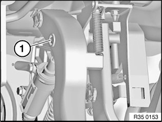
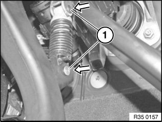
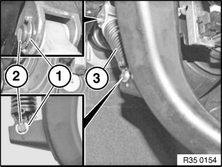
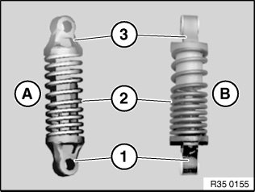
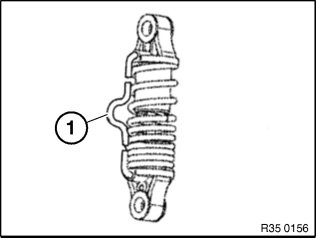

35 31 050 Removing and Installing/Replacing Over-Centre Helper Spring
35 31 050 Removing and installing/replacing overcentre helper spring

Necessary preliminary tasks:
- Remove pedal trim.

Press end of pin (1) together with offset pliers and press out pin.

Push in pin (1) fully in direction of arrow.

Detach retainers (1).
Installation:
Check retainers, replace if necessary.
Retainers must lie with both legs in the groove and snap audibly into place.
Slide out pin (2).
Installation:
Lightly grease pin.
Remove over-centre helper spring (3).

There are two versions:
- (A) Over-centre helper spring
- (B) Reinforced over-centre helper spring
Assembly of over-centre helper spring:
- Secure black holder (1) to clutch pedal
- Smaller coil spacing of spring (2) points to black holder (1)
- Secure grey holder (3) to bearing block
Lightly grease holder and spring contact surfaces.

Installation:
Secure over-centre helper spring first with black holder to clutch pedal.
Gently press over-centre helper spring together and secure with grey holder to bearing block.
Connect clutch pedal to clutch master cylinder.
When replacing reinforced over-centre helper spring:
Remove locking clamp (1).